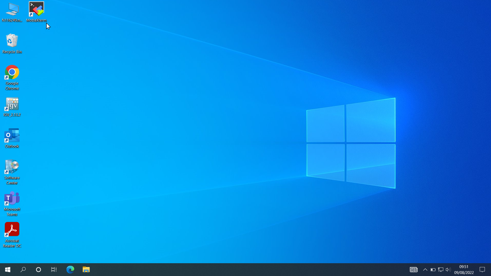
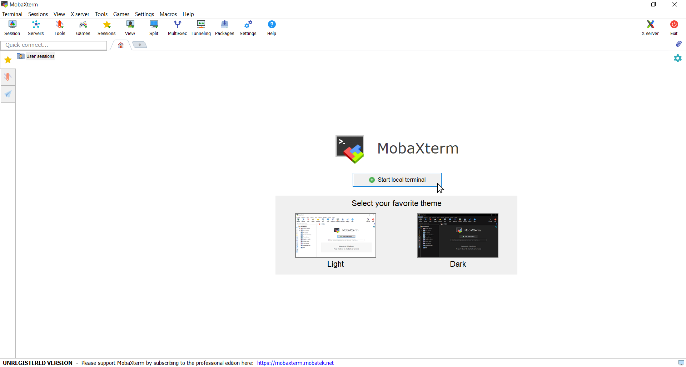
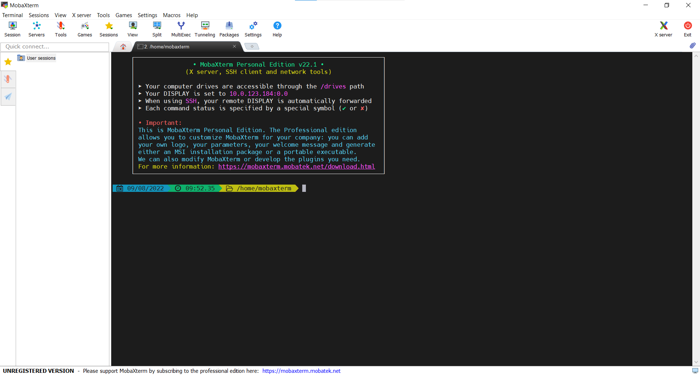
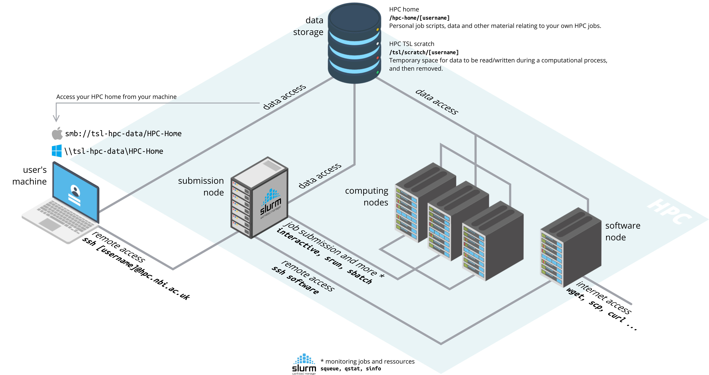
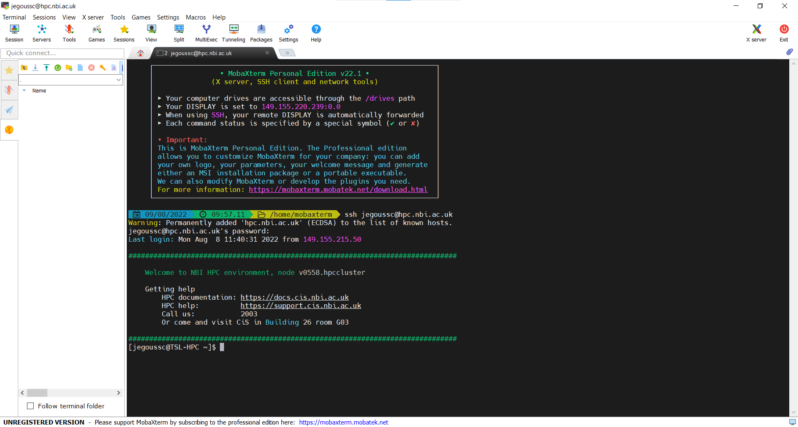

- Teaching: 20 min
- Exercises: 10 min
- What is a command shell and why would I use one?
- How can I move around on my computer?
- How can I see what files and directories I have?
- How can I specify the location of a file or directory on my computer?
- Describe key reasons for learning shell.
- Navigate your file system using the command line.
- Access and read help files for
bash programs and use help files to identify useful command options.
- Demonstrate the use of tab completion, and explain its advantages.
What is a shell and why should I care?
A shell is a computer program that presents a command line interface which allows you to control your computer using commands entered with a keyboard instead of controlling graphical user interfaces (GUIs) with a mouse/keyboard/touchscreen combination.
There are many reasons to learn about the shell:
Many bioinformatics tools can only be used through a command line interface. Many more have features and parameter options which are not available in the GUI. BLAST is an example. Many of the advanced functions are only accessible to users who know how to use a shell.
The shell makes your work less boring. In bioinformatics you often need to repeat tasks with a large number of files. With the shell, you can automate those repetitive tasks and leave you free to do more exciting things.
The shell makes your work less error-prone. When humans do the same thing a hundred different times (or even ten times), they’re likely to make a mistake. Your computer can do the same thing a thousand times with no mistakes.
The shell makes your work more reproducible. When you carry out your work in the command-line (rather than a GUI), your computer keeps a record of every step that you’ve carried out, which you can use to re-do your work when you need to. It also gives you a way to communicate unambiguously what you’ve done, so that others can inspect or apply your process to new data.
Many bioinformatic tasks require large amounts of computing power and can’t realistically be run on your own machine. These tasks are best performed using remote computers or cloud computing, which can only be accessed through a shell.
In this lesson you will learn how to use the command line interface to move around in your file system.
How to access the shell
On a Mac or Linux machine, you can access a shell through a program called “Terminal”, which is already available on your computer. The Terminal is a window into which we will type commands. If you’re using Windows, you need to use a separate program to access the shell. You can use MobaXterm, a terminal for Windows, that is already installed on your machine.
Windows
- Click on the MobaXterm icon on your desktop.
- Select
Start local terminal



To save time, we are going to be working on a remote server where all the necessary data and software available. When we say a ‘remote sever’, we are talking about a computer that is not the one you are working on right now. You will access the remote server where everything is prepared for the lesson. We will learn the basics of the shell by manipulating some data files. Some of these files are very large , and would take time to download to your computer. We will also be using several bioinformatic packages in later lessons and installing all of the software would take up time even more time. A ‘ready-to-go’ sever let’s us focus on learning.
How to access the remote server

The remote server is a computer cluster used for high performance computing (HPC) for the Norwich BioScience Institutes (NBI). You can log into the remote server using the command ssh, your username and the address of the server hpc.nbi.ac.uk (make sure to replace [username] by your actual TSL username).
ssh [username]@hpc.nbi.ac.uk
You must then input your password.
MobaXterm will offer for you to save your password. It is up to you to do so.
After entering you password, you will be logged in the server and see the welcome message as seen in the screen capture below:

This welcome message provides a lot of information about the remote server that you’re logging into. We’re not going to use most of this information for our workshop, so you can clear your screen using the clear command.
Type the word clear into the terminal and press the Enter key.
This will scroll your screen down to give you a fresh screen and will make it easier to read. You haven’t lost any of the information on your screen. If you scroll up, you can see everything that has been output to your screen up until this point.
Hot-key combinations are shortcuts for performing common commands. The hot-key combination for clearing the console is Ctrl+L. Feel free to try it and see for yourself.
Navigating your file system
The part of the operating system that manages files and directories is called the file system. It organizes our data into files, which hold information, and directories (also called “folders”), which hold files or other directories.
Several commands are frequently used to create, inspect, rename, and delete files and directories.
Prompt
The dollar sign is a prompt, which shows us that the shell is waiting for input (other shell may use a different character as a prompt and may add information before the prompt). When typing commands, either from these lessons or from other sources, do not type the prompt, only the commands that follow it.
Print working directory
Let’s find out where we are by running a command called pwd (which stands for “print working directory”). At any moment, our current working directory is our current default directory, i.e., the directory that the computer assumes we want to run commands in, unless we explicitly specify something else. Here, the computer’s response is /hpc-home/[username], which is the top level directory within our server:
$ pwd
/hpc-home/[username]
Listing
Let’s look at how our file system is organized. We can see what files and subdirectories are in this directory by running ls, which stands for “listing”:
ls prints the names of the files and directories in the current directory in alphabetical order, arranged neatly into columns. We’ll be working within the shell_data subdirectory, and creating new subdirectories, throughout this workshop.
Make new directory
Let’s make a new directory (folder) called shell_data for today’s session using the command mkdir for “make directory”:
Now let’s see our new directory using the listing command ls:
Copy directory
Our home directory is empty. Let’s copy a directory called shell_data from the home directory of user jegoussc using the command cp for “copy”. The flag -r stands for “recursive” and specifies that we want to copy the full content of the directory shell_data:
$ cp -r /hpc-home/jegoussc/shell_data/ /hpc-home/[username]/
Change directory
The command to change locations in our file system is cd, followed by a directory name to change our working directory. cd stands for “change directory”.
We can also use the command pwd to print the current working directory:
Flags
Earlier, ee used the flag -r with the cp command. Let’s have a look at the content of the directory now. We can make the ls output more comprehensible by using the flag -F, which tells ls to add a trailing / to the names of directories:
$ ls -F
sra_metadata/ untrimmed_fastq/
Anything with a “/” after it is a directory. Things with a “*” after them are programs. If there are no decorations, it’s a file.
Manuals
ls has lots of other options. To find out what they are, we can type:
man (short for “manual”) displays detailed documentation (also referred as man page or man file) for bash commands. It is a powerful resource to explore bash commands, understand their usage and flags. Some manual files are very long. You can scroll through the file using your keyboard’s down arrow or use the Space key to go forward one page and the b key to go backwards one page. When you are done reading, hit the key q to quit.
Use the -l option for the ls command to display more information for each item in the directory. What is one piece of additional information this long format gives you that you don’t see with the bare ls command?
No one can possibly learn all of these arguments, that’s what the manual page is for. You can (and should) refer to the manual page or other help files as needed.
Let’s go into the untrimmed_fastq directory and see what is in there.
$ cd untrimmed_fastq
$ ls -F
SRR097977.fastq* SRR098026.fastq*
This directory contains two files with .fastq extensions. FASTQ is a format for storing information about sequencing reads and their quality. We will be learning more about FASTQ files in a later lesson.
Tab Completion
Typing out file or directory names can waste a lot of time and it’s easy to make typing mistakes. Instead we can use tab complete as a shortcut. When you start typing out the name of a directory or file, then hit the Tab key, the shell will try to fill in the rest of the directory or file name.
Return to your home directory:
then enter (<tab> to hit the tabulation key):
The shell will fill in the rest of the directory name for shell_data and auto-complete the command:
Now change directories to untrimmed_fastq in shell_data
Using tab complete can be very helpful. However, it will only auto-complete a file or directory name if you’ve typed enough characters to provide a unique identifier for the file or directory you are trying to access.
For example, if we now try to list the files which names start with SR by using tab complete:
The shell auto-completes your command to SRR09, because all file names in the directory begin with this prefix. When you hit Tab again, the shell will list the possible choices.
$ ls SRR09<tab><tab>
SRR097977.fastq SRR098026.fastq
Tab completion can also fill in the names of programs, which can be useful if you remember the beginning of a program name.
$ pw<tab><tab>
pwck pwconv pwd pwdx pwunconv pwmake pwscore
Displays the name of every program that starts with pw.
Summary
We now know how to move around our file system using the command line. This gives us an advantage over interacting with the file system through a GUI as it allows us to work on a remote server, carry out the same set of operations on a large number of files quickly, and opens up many opportunities for using bioinformatic software that is only available in command line versions.
In the next few episodes, we’ll be expanding on these skills and seeing how using the command line shell enables us to make our workflow more efficient and reproducible.
- The shell gives you the ability to work more efficiently by using keyboard commands rather than a GUI.
- Useful commands for navigating your file system include:
ls, pwd, and cd.
- Most commands take options (flags) which begin with a
-.
- Tab completion can reduce errors from mistyping and make work more efficient in the shell.